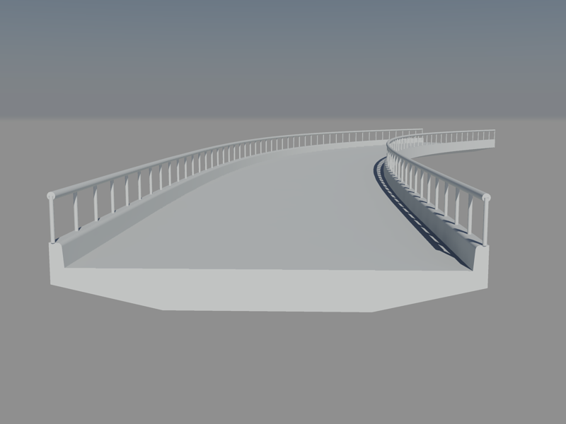
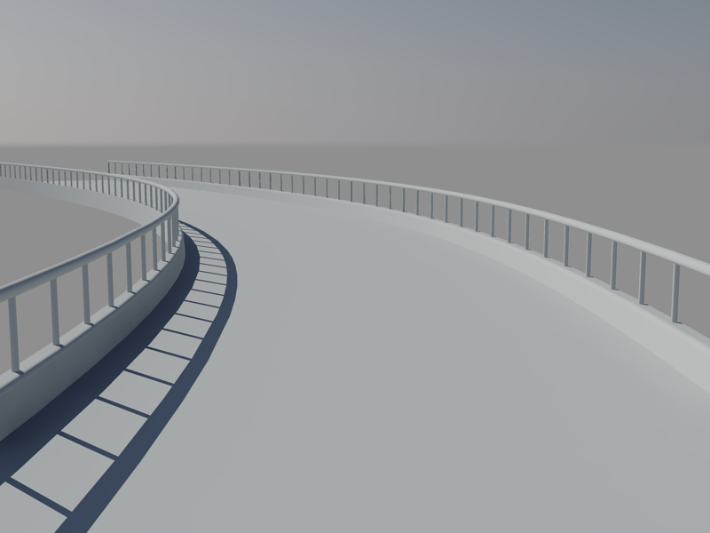

請記得說明以下事項（參與練習的朋友可獲得威望值+6）:
1.3d成品圖片
2.建模所用到的指令(約略說明即可)
3.使用的AutoCAD版本
4.建模所需時間
5.您的意見補充
大家可以先自行嘗試，如果有困難再參考以下影片方式來製作~
影片步驟展示：
補充：相關影片操作：
AutoCAD 2012 2D新功能 路徑陣列
youtube頻道 > https://www.youtube.com/watch?v=cK7xyP0DP0c
AutoCAD 2012 3D新功能 三維關聯陣列
youtube頻道 > https://www.youtube.com/watch?v=fp3SJWJX29A